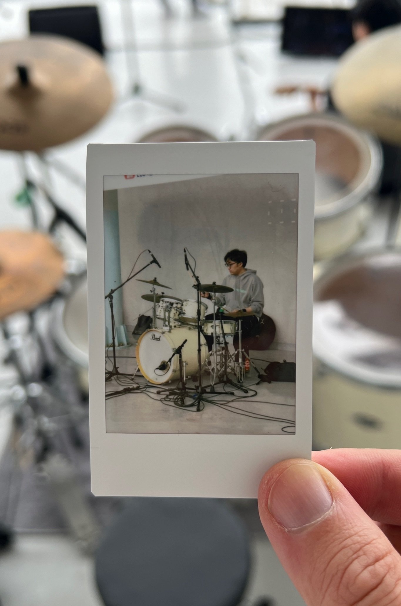
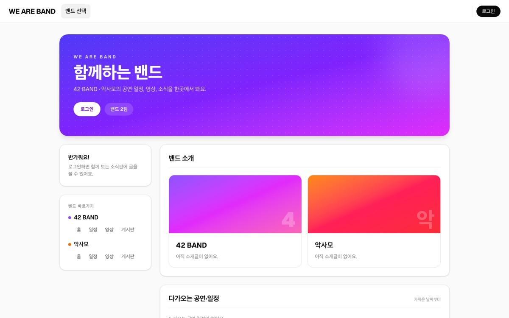
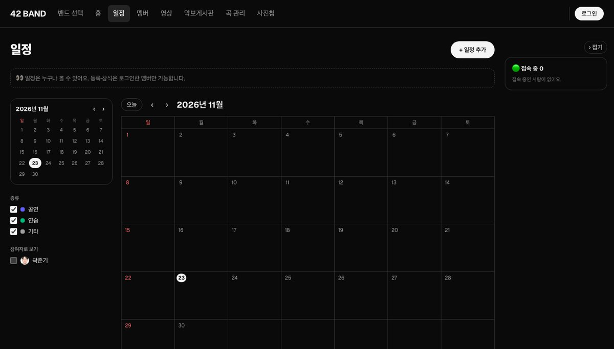
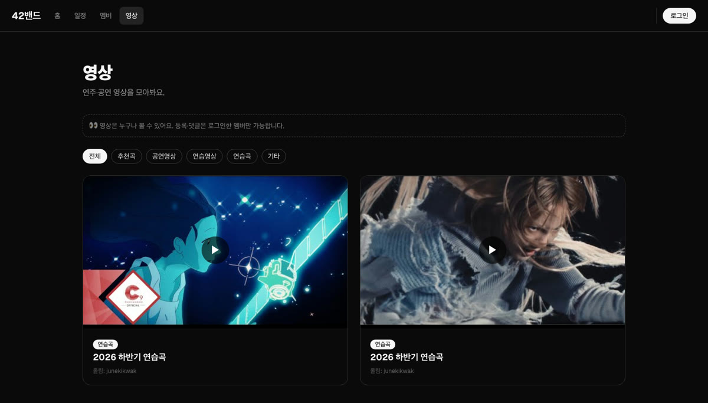
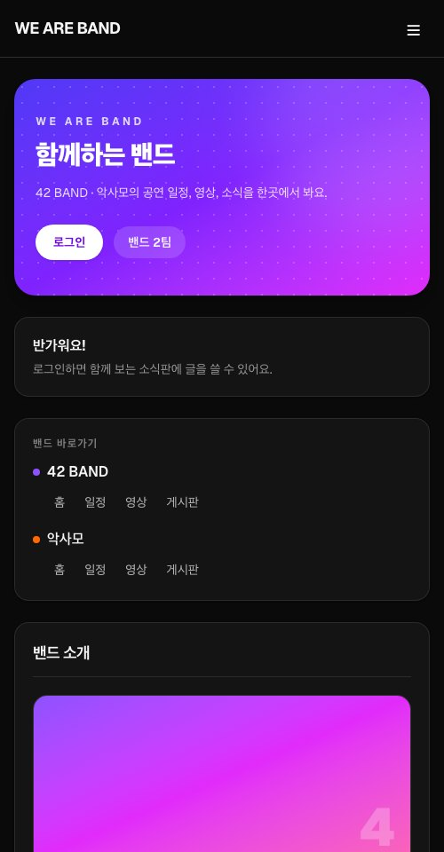
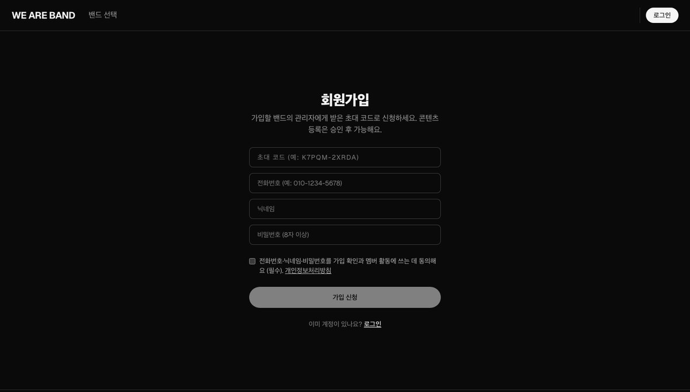

01 문제 PROBLEM
밴드 소통이 카카오톡 단톡방으로만 이뤄졌습니다. 악보 파일, 연습할 곡 링크, 다음에 할 곡 이야기, 합주 일정이 모두 같은 대화에 섞여 금방 위로 밀려났습니다.
밴드에서는 악보와 곡을 나누고, 곡을 함께 고르고, 채팅과 게시판으로 이야기를 남기는 일을 사이트 한곳에서 하길 원했습니다. 카톡을 대신하기보다, 음악 이야기를 더 나눌 공간을 만드는 것이 목표였습니다.

02 기능 FEATURES
밴드 활동 순서대로: 곡 선정 → 악보 → 영상 → 일정
곡 선정에서는 누구나 곡을 제안하고 '하고 싶어요'로 참여 의사를 남깁니다. 게시판에는 파트별 악보(PDF·이미지)를 올리고 파트로 걸러 보게 했고, 연습·공연 영상은 추천곡·공연·연습·연습곡으로 나눴습니다. 일정은 구글 캘린더처럼 보고 참석을 체크하며, 공휴일도 달력에 표시합니다.
공개 화면
로그인 없이 보이는 화면입니다. 두 밴드가 같은 디자인을 쓰고, 휴대폰에서도 같은 구성으로 보입니다. 공동 홈·일정·휴대폰 화면은 통합 후(2026.11.18–24), 영상 화면은 통합 전 42 BAND(2026.11.17)에서 캡처했습니다. 곡 선정·악보게시판·사진첩은 멤버 전용이라 담지 않았고, 연락처가 있는 하단은 잘라냈습니다.




밴드에 맞춘 로그인과 실시간 기능
42 BAND는 구글 로그인으로, 악사모는 멤버들이 이메일 없이 가입하도록 전화번호·닉네임·비밀번호 방식으로 바꿨습니다. 접속 현황은 Supabase Realtime으로, 악보·사진 파일은 Supabase Storage로 처리하고 Vercel에 배포했습니다. 처음 넣은 채팅은 쓰임이 적어 8월에 정리했습니다.
03 권한과 보안 ACCESS
멤버만 쓰도록, 권한은 DB에서 확인
가입하면 관리자 승인을 기다리고, 승인된 멤버만 글·사진·곡 선정을 쓸 수 있습니다. 화면에서만 막지 않고 Supabase(PostgreSQL)의 행 단위 보안(RLS) 정책으로 테이블마다 읽기·쓰기 권한을 걸었습니다. 일정과 영상은 누구나 볼 수 있게 열어 두었습니다.
2026.11 정리하며 실제로 막은 것
- 연락처 노출 공개로 읽히던 테이블에 전화번호가 든 로그인용 이메일이 남아 있어 컬럼을 지우고, 프로필 원본은 본인·관리자만 읽게 했습니다.
- 초대 코드 가입 아무나 가입 신청하던 구조를 관리자 초대 코드로 바꿨습니다. 코드는 약 49비트 무작위 값이고 7일 뒤 만료되며, DB에는 원문 대신 SHA-256 해시만 저장합니다. 실패 이유는 하나의 문구로만 알려 코드·번호를 떠보지 못하게 했습니다.
- 업로드 제한 승인된 멤버만 파일을 올리고, 저장소마다 형식(이미지·영상)과 크기 상한을 걸었습니다. 글·사진을 지우면 파일도 함께 지웁니다.
- 밴드 간 격리 한 밴드 멤버가 API로 다른 밴드의 일정·영상·글을 쓰려 하면 RLS가 거절하는지 E2E로 확인합니다. 소식판은 작성자·밴드를 바꿔 쓰는 수정을 트리거로 막았습니다.
- 키와 의존성 서비스 키는 서버 전용 모듈에서만 읽고, Next.js 등 운영 의존성을 올려
npm audit의 critical 1·high 5개를 0으로 만들었습니다. - 개인정보처리방침 실제로 받는 값과 보관 위치(Supabase, AWS 서울)·기간을 적은 페이지를 만들고 가입 때 동의를 받습니다.

04 두 밴드 통합 MERGE
두 밴드를 한 사이트로: WE ARE BAND
같은 코드를 두 저장소에서 따로 고치던 구조를 하나로 합쳤습니다. 한 배포에서 /akssamo·/42band처럼 밴드별 경로를 쓰고, 멤버 승인·관리자 권한은 밴드마다 따로 둡니다. 다른 밴드의 일정·글에 쓰지 못하도록 DB 함수(is_band_member 등)로 RLS를 다시 짰습니다. 첫 화면은 두 밴드의 소개·다가오는 일정·최근 영상·함께 보는 소식판을 모은 공동 홈으로 만들었습니다.
통합 설계 문서
기능마다 결정한 내용을 저장소의 설계 문서로 남기고, 같은 이름의 E2E 테스트로 그 결정을 확인했습니다.
docs/multi-band.md2026.11.17여러 밴드 운영
- 한 배포에서
/akssamo·/42band경로로 나누고, 없는 밴드 이름은 404로 처리 - 계정·닉네임·프로필 사진은 전역으로 공유하고, 승인·관리자·파트는 밴드별로 관리
- 한 계정으로 여러 밴드에 가입할 수 있도록 초대 코드 페이지
/join을 공통으로 사용 - 기존 데이터는 악사모로 귀속하고, 42 BAND 옛 데이터는 가져오지 않음
검증 · multi-band.spec.ts 두 밴드 로컬 데이터로 권한·가입 확인
docs/hub-home.md2026.11.18공동 홈
- 로그인 여부와 관계없이 모든 밴드 카드를 보여 주고, 내 가입 상태만 덧붙임
- 다가오는 일정 6개는 서울 날짜 기준, 최근 영상 6개는 등록 시각 순
- 소식판은 승인된 멤버만 읽고 쓰며, 작성 뒤에는 밴드·작성자를 바꿀 수 없음
- 새 컬럼·테이블·정책만 추가하는 마이그레이션 1개로 기존 정책은 건드리지 않음
검증 · hub-home.spec.ts 375px 밝은·어두운 화면, 소식판 권한, 사칭 차단
AI 에이전트와 나눠 작업하고 직접 검증
통합 작업은 Claude Code와 Codex에 단계별로 나눠 맡겼습니다. 결과는 그대로 믿지 않고 타입 검사·빌드·로컬 Supabase에서 도는 Playwright E2E 24개로 다시 확인한 뒤 합쳤습니다. DB 변경은 main에 합치면 운영에 바로 적용되므로, 지우거나 바꾸지 않고 추가만 하는 마이그레이션으로 나눴습니다.
05 구조 ARCHITECTURE
밴드 화면은 URL의 밴드 이름(/akssamo, /42band)을 먼저 확인합니다. 글·일정·곡을 쓰는 요청은 Next.js 서버가 승인 멤버인지 확인한 뒤 사용자 세션으로 Supabase에 쓰고, 그다음 RLS가 같은 밴드의 행인지 한 번 더 검사합니다.
06 쓰면서 바꾼 것 TIMELINE
42 BAND를 5일 동안 만들어 배포한 뒤, 같은 구조를 두 번째 밴드인 악사모에 옮겨 8월 초까지 고쳐 나갔습니다. 악사모에서는 멤버들이 이메일 없이 가입할 수 있게 전화번호 가입을 만들었고, 쓰임이 적던 채팅은 메뉴에서 내린 뒤 코드까지 정리했습니다. 11월에는 두 사이트를 하나로 합쳤습니다. 표는 두 저장소의 커밋 기록으로 정리했습니다.
| 날짜 | 한 일 | 사이트 |
|---|---|---|
| 07.06 – 10 | 첫 버전: 구글 로그인·멤버 승인, 일정·참석 체크, 영상 모음·분류, 파트별 악보 첨부, 곡 선정('하고 싶어요'), 실시간 채팅 | 42 BAND |
| 07.10 | 두 번째 밴드용으로 옮겨 배포, 이메일 없는 전화번호 가입 | 악사모 |
| 07.13 – 20 | 곡 선정 투표순·마감 임박순 정렬, '악보게시판'과 악보 바로 보기, 채팅 메뉴 내림 | 악사모 |
| 07.31 | 밴드 멤버가 PR로 보낸 곡 관리·보관 기능을 합치고 곡 삭제 오류 수정 | 악사모 |
| 08.04 | 채팅·알림 코드와 테이블 정리 | 악사모 |
| 11.17 | 밀린 PR·이슈 정리: 연락처 노출 제거, 승인 멤버만 업로드, 초대 코드 가입, 로컬 Supabase E2E와 CI, 개인정보처리방침 | 악사모 |
| 11.17 – 18 | 두 밴드를 한 사이트로 합치고 주소를 weareband.vercel.app으로 변경, 공동 홈 적용, 42 BAND 옛 주소는 새 사이트로 이동 | WE ARE BAND |
07 결과 RESULT
2026.11.17–18에 두 사이트를 WE ARE BAND(weareband.vercel.app) 하나로 합쳐, 이제 저장소 하나만 고치면 두 밴드에 함께 반영됩니다. 가입은 관리자가 만든 초대 코드로만 신청할 수 있고, 멤버 승인과 관리자 권한은 밴드마다 따로 관리합니다.
GitHub Actions에서 로컬 Supabase로 E2E를 돌려, 권한 규칙이 바뀌어도 다른 밴드 쓰기 차단과 초대 코드 1회 사용을 다시 확인합니다. 2026.11.18 기준 밴드 2개에 승인된 멤버십은 12개입니다.
08 확인 자료 EVIDENCE
- 기술
- Next.js 16 · React 19 · TypeScript · Supabase(PostgreSQL · Auth · Storage · Realtime) · Vercel · Playwright E2E · GitHub Actions
- 기록
- 두 저장소 커밋 기록(42 BAND 57개, 악사모·WE ARE BAND 55개 중 11월 통합 작업 25개), PR #11–#17, 2026.11.17–18 공개 화면. 저장소는 비공개입니다.